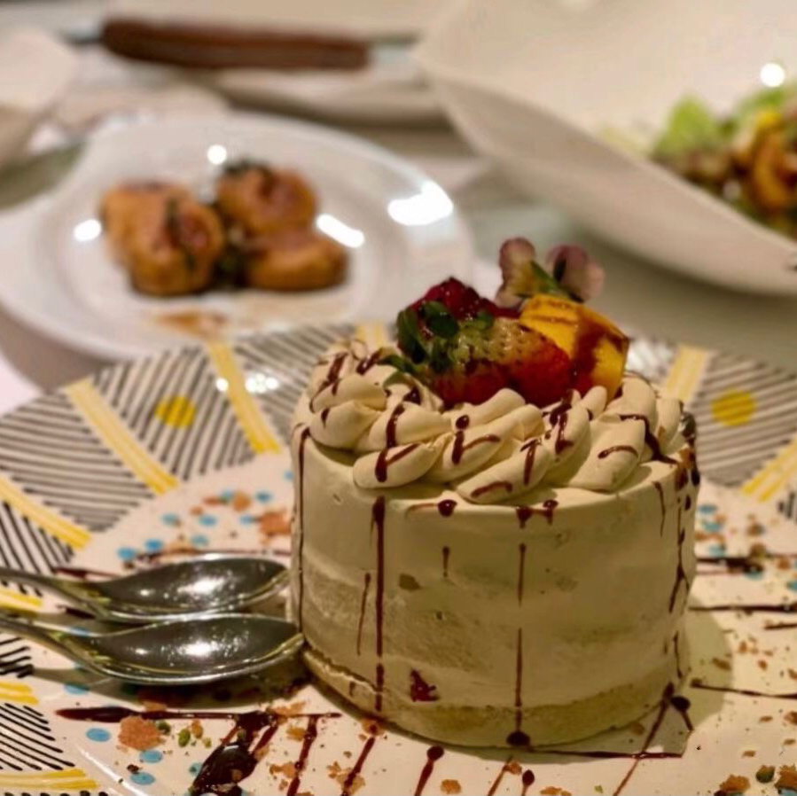

这是一小段文本
百度
这是一个斜体标签
语气强硬的标签
语气更强硬的标签

这是第一个标题
春眠不觉晓， 处处闻啼鸟。 夜来风雨声， 花落知多少。
有序列表
有序列表
无序列表
无序列表
div主要是给网页布局使用
🚹
🚺
唱歌
跳舞
弹琴
黑龙江
吉林
辽宁
点到谁谁上岸
那就是
青藏高原
background-color属性
字体样式
字体样式
居中对齐
LXC
LXC
LXC
LXC
LXC
这是一个 积极的 打工人
文章内容
a
文章内容
b
🍎
🍐
🍌
🍇
1
2
3
4
1
3
4
我
最爱的
爸妈
链接
段落